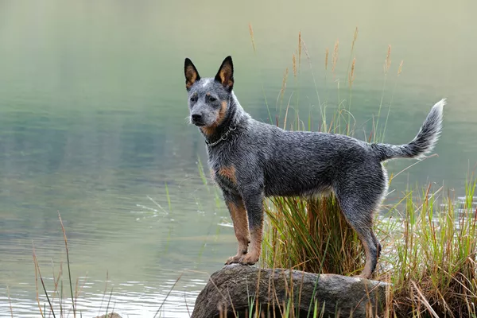

The Australian Cattle Dog
The Australian Cattle Dog, also known as the Blue Heeler or Red Heeler. Below ae some fast facts that we'll explore more.
| Characteristic | Description |
|---|---|
| Other Names | Blue Heeler, Red Heeler, Queensland Heeler |
| Origin | Australia |
| Size | Medium (17-20 inches tall, 35-50 pounds) |
| Coat | Short, dense double coat (blue or red speckled) |
| Temperament | Intelligent, loyal, energetic, protective, wary of strangers |
| Energy Level | High |
| Exercise Needs | Significant daily exercise and mental stimulation |
| Trainability | Highly trainable, but can be independent |
| Ideal Owner | Active individual or family with experience with herding breeds, able to provide ample exercise and training |
| Health Concerns | Hip dysplasia, deafness, progressive retinal atrophy |